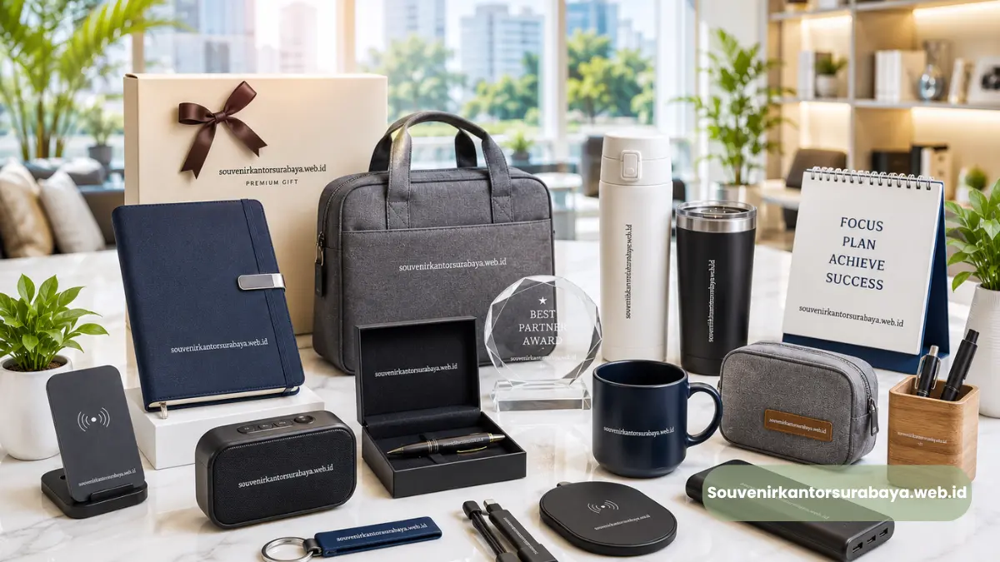
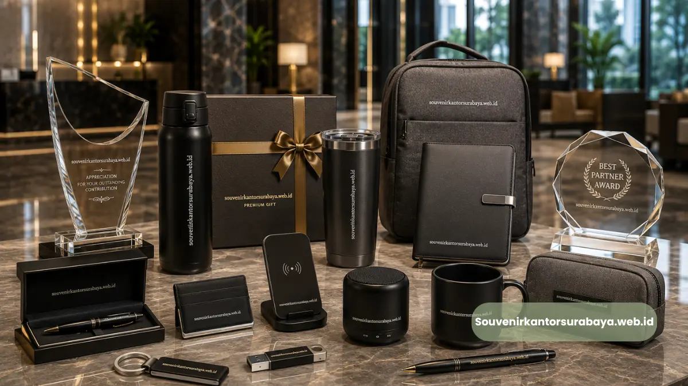
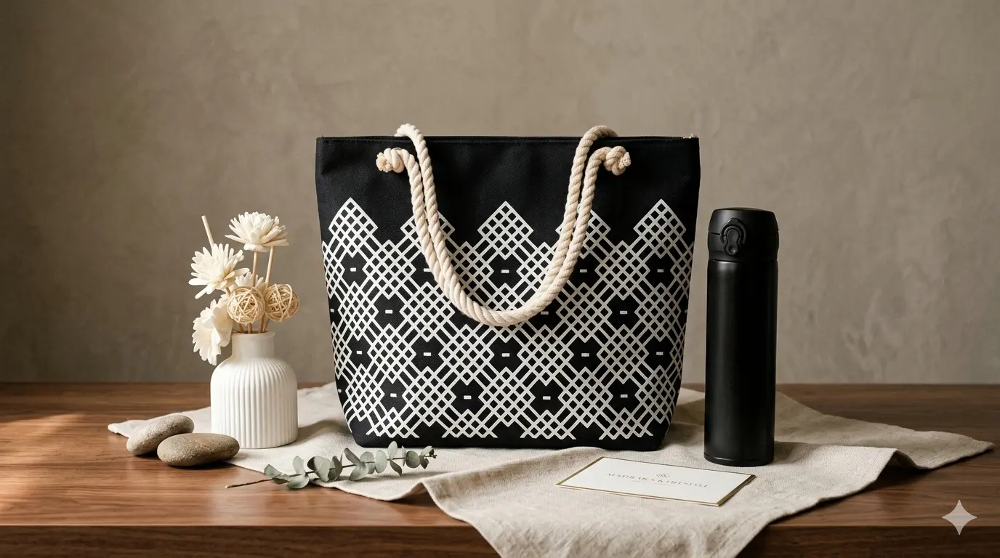

Plakat Kristal 3D Penghargaan Kantor Surabaya: Solusi Apresiasi Berkelas.
Plakat kristal 3D penghargaan kantor Surabaya adalah souvenir premium hasil ukiran laser tiga dimensi di dalam blok kristal, dirancang khusus untuk memberi kesan elegan dan profesional pada momen apresiasi korporat.
- Plakat kristal 3D dibuat melalui teknik laser engraving yang membentuk citra tiga dimensi di dalam material kristal padat.
- Umum digunakan untuk penghargaan karyawan terbaik, mitra bisnis, purna tugas, hingga pencapaian target perusahaan.
- Menawarkan kesan mewah dan tahan lama dibanding souvenir penghargaan berbahan kayu atau akrilik konvensional.
- Dapat dipesan secara custom sesuai logo, foto, dan teks perusahaan di souvenirkantorsurabaya.web.id.
- Cocok untuk perusahaan, instansi pemerintah, dan organisasi di Surabaya yang ingin menghadirkan penghargaan berkesan.
Apa Itu Plakat Kristal 3D dan Mengapa Diminati Perusahaan di Surabaya?
Plakat kristal 3D adalah blok kristal transparan berkualitas tinggi yang di dalamnya terdapat gambar, logo, atau foto tiga dimensi hasil teknologi laser engraving presisi.
Perusahaan di Surabaya semakin memilih media ini karena tampilannya yang berkelas sekaligus fleksibel untuk berbagai jenis penghargaan.
Berbeda dengan plakat cetak biasa, gambar pada plakat kristal 3D tampak "mengambang" di dalam material, menciptakan efek visual yang unik dan sulit ditiru oleh souvenir konvensional. Efek ini menjadi salah satu alasan utama mengapa plakat kristal 3D sering dipilih untuk acara penghargaan tahunan, ulang tahun perusahaan, hingga penghargaan purna bakti karyawan senior.
Secara umum, minat terhadap souvenir berbahan kristal untuk penghargaan korporat di Surabaya terus meningkat sepanjang 2024-2025, seiring makin banyak perusahaan yang ingin tampil lebih profesional dalam acara internal maupun eksternal mereka.
Siapa yang Biasanya Memesan Plakat Kristal 3D?
Plakat kristal 3D banyak dipesan oleh divisi HRD, tim event organizer, hingga sekretariat instansi pemerintah untuk berbagai kebutuhan seremonial.
Kelompok pemesan utama meliputi perusahaan swasta, BUMN, sekolah dan kampus, komunitas profesi, hingga organisasi keagamaan yang rutin mengadakan acara penghargaan tahunan.
Keunggulan Plakat Kristal 3D Dibanding Souvenir Penghargaan Lain
Plakat kristal 3D menawarkan beberapa keunggulan dibanding plakat kayu, akrilik, atau logam pada umumnya, terutama dari sisi ketahanan, estetika, dan nilai simbolis yang dirasakan penerima.
Material kristal memiliki bobot yang terasa lebih premium saat digenggam, permukaan yang berkilau alami, serta daya tahan terhadap goresan yang umumnya lebih baik dibanding akrilik. Faktor-faktor ini membuat penerima penghargaan merasa dihargai secara lebih personal dan berkesan.
Selain itu, proses ukiran laser 3D memungkinkan detail foto atau logo yang presisi tanpa memerlukan tinta atau cat tambahan, sehingga warna dan bentuknya cenderung tidak pudar meski disimpan bertahun-tahun.
Karakteristik ini menjadikan plakat kristal 3D pilihan yang tepat untuk penghargaan yang ingin dikenang dalam jangka panjang, seperti penghargaan masa kerja 10 tahun atau penghargaan purna tugas.
Mengapa Kesan Visual Plakat Kristal 3D Lebih Berkelas?
Efek gambar tiga dimensi yang tampak melayang di dalam kristal memberikan kesan visual yang lebih dramatis dibanding cetakan datar biasa.
Saat terkena cahaya, permukaan kristal memantulkan spektrum warna yang membuat plakat terlihat semakin hidup dan elegan di ruang pajang maupun meja kerja penerima.
Berbagai Jenis Bentuk dan Desain Plakat Kristal 3D untuk Kantor
Plakat kristal 3D tersedia dalam berbagai bentuk dan ukuran yang dapat disesuaikan dengan kebutuhan acara maupun identitas perusahaan.
Beberapa bentuk yang umum dipilih antara lain bentuk balok persegi klasik, bentuk trophy meruncing, bentuk gelombang atau melengkung, hingga bentuk custom mengikuti logo perusahaan.
Setiap bentuk memiliki karakter penyampaian pesan yang berbeda. Bentuk balok klasik cenderung dipilih untuk kesan formal dan korporat, sementara bentuk trophy atau melengkung lebih sering digunakan untuk penghargaan yang menonjolkan pencapaian individu, seperti penghargaan karyawan terbaik bulanan atau tahunan.
Desain isi plakat juga dapat disesuaikan, mulai dari kombinasi teks dan logo perusahaan, foto individu penerima penghargaan, hingga ilustrasi 3D bangunan kantor atau simbol pencapaian tertentu.
Fleksibilitas ini membuat plakat kristal 3D dapat digunakan lintas kebutuhan, dari penghargaan internal hingga cendera mata untuk mitra bisnis dan tamu kehormatan.

Desain plakat kristal 3D dapat disesuaikan dengan kebutuhan perusahaan Anda.
Bagaimana Proses Pembuatan Plakat Kristal 3D Custom Berlangsung?
Proses pembuatan plakat kristal 3D custom umumnya dimulai dari konsultasi kebutuhan desain, pemilihan bentuk dan ukuran kristal, hingga tahap ukiran laser presisi tinggi ke dalam material kristal.
Tahap awal biasanya melibatkan diskusi mengenai tujuan penghargaan, teks yang ingin dicantumkan, serta foto atau logo yang akan diukir. Setelah desain disetujui, file digital diproses menggunakan teknologi laser 3D yang membentuk titik-titik mikro di dalam kristal sehingga membentuk citra tiga dimensi yang presisi.
Durasi pengerjaan dapat bervariasi tergantung tingkat kerumitan desain, jumlah unit yang dipesan, serta ketersediaan bahan baku kristal pada periode pemesanan.
Untuk kebutuhan acara dengan tenggat waktu tertentu, perusahaan disarankan melakukan pemesanan lebih awal agar proses produksi dan pengiriman berjalan lebih optimal.
Apa Saja yang Perlu Disiapkan Sebelum Memesan?
Sebelum memesan, perusahaan umumnya perlu menyiapkan logo dalam format vektor, teks penghargaan yang sudah difinalisasi, serta foto penerima apabila desain menggunakan elemen foto personal. Kejelasan data ini akan mempercepat proses desain dan produksi plakat kristal 3D.
Momen Terbaik Memberikan Plakat Kristal 3D sebagai Penghargaan Karyawan
Plakat kristal 3D dapat digunakan pada berbagai momen seremonial di lingkungan kantor, mulai dari acara tahunan hingga pencapaian personal.
Beberapa momen yang umum menggunakan plakat kristal 3D antara lain acara penghargaan karyawan terbaik tahunan, perayaan ulang tahun perusahaan, penghargaan masa kerja tertentu, serta apresiasi kepada mitra bisnis strategis.
Selain momen internal, plakat kristal 3D juga kerap digunakan sebagai cendera mata resmi pada seminar, konferensi, atau kunjungan kerja instansi, di mana kesan profesional dan berkelas menjadi pertimbangan utama.
Berapa Kisaran Biaya Plakat Kristal 3D Penghargaan di Surabaya?
Biaya plakat kristal 3D penghargaan kantor umumnya bervariasi tergantung ukuran, bentuk, tingkat kerumitan desain, serta jumlah unit yang dipesan.
Semakin besar ukuran dan semakin detail desain 3D yang diinginkan, umumnya semakin tinggi pula biaya produksinya.
Pemesanan dalam jumlah banyak, misalnya untuk seluruh divisi atau acara penghargaan tahunan skala besar, umumnya dapat memperoleh penyesuaian harga per unit dibanding pemesanan satuan.
Untuk mendapatkan estimasi biaya yang sesuai kebutuhan spesifik perusahaan Anda, tim souvenirkantorsurabaya.web.id siap membantu memberikan simulasi harga berdasarkan desain dan jumlah yang diinginkan.
Bagaimana Cara Memesan Plakat Kristal 3D?
Cara memesan plakat kristal 3D di souvenirkantorsurabaya.web.id umumnya diawali dengan konsultasi kebutuhan desain melalui website resmi, dilanjutkan dengan pengiriman logo, teks, dan foto yang ingin diukir, lalu diakhiri dengan konfirmasi desain sebelum produksi dimulai.
Setelah kebutuhan awal disampaikan, tim akan membantu menyesuaikan bentuk, ukuran, dan tata letak desain agar sesuai dengan tema acara penghargaan yang direncanakan.
Draf desain digital biasanya diberikan terlebih dahulu untuk ditinjau dan disetujui, sehingga hasil akhir plakat kristal 3D benar-benar sesuai dengan ekspektasi perusahaan sebelum masuk ke tahap produksi laser.
Bagi perusahaan yang memiliki tenggat waktu acara tertentu, disarankan untuk menyampaikan tanggal pelaksanaan acara sejak awal konsultasi agar tim produksi dapat mengatur jadwal pengerjaan dan pengiriman dengan lebih optimal.
Proses konsultasi hingga produksi ini dirancang agar perusahaan tidak perlu repot mengurus detail teknis pengukiran, cukup menyampaikan kebutuhan dan menunggu hasil akhir yang siap digunakan pada hari acara.
Apakah Bisa Memesan dalam Jumlah Banyak Sekaligus?
Pemesanan dalam jumlah banyak, misalnya untuk seluruh divisi atau seluruh karyawan penerima penghargaan tahunan, umumnya dapat dilayani dengan penyesuaian jadwal produksi agar seluruh unit selesai tepat waktu sebelum acara berlangsung.
Kesalahan Umum Saat Memesan Plakat Kristal 3D untuk Kantor
Beberapa kesalahan yang sering terjadi saat memesan plakat kristal 3D antara lain menyerahkan file logo beresolusi rendah, menunda pemesanan hingga mendekati tanggal acara, serta tidak melakukan konfirmasi ulang teks penghargaan sebelum proses produksi dimulai.
Kesalahan-kesalahan ini dapat memperlambat proses produksi atau bahkan menyebabkan hasil akhir kurang sesuai harapan.
Oleh karena itu, komunikasi yang jelas mengenai desain, teks, dan tenggat waktu sejak awal pemesanan sangat penting untuk memastikan hasil plakat kristal 3D sesuai kebutuhan acara.
Kesimpulan
Plakat kristal 3D penghargaan kantor Surabaya adalah pilihan souvenir premium yang mampu menghadirkan kesan profesional, elegan, dan berkesan bagi penerima penghargaan.
Dengan proses ukiran laser 3D yang presisi, desain custom logo dan foto, serta berbagai pilihan bentuk, plakat kristal 3D cocok digunakan untuk penghargaan karyawan, mitra bisnis, hingga cendera mata resmi instansi.
Perencanaan yang matang sejak awal, mulai dari pemilihan bentuk hingga penentuan tenggat waktu produksi, akan membantu perusahaan menghadirkan penghargaan yang benar-benar berkesan pada hari acara.
Ingin menghadirkan penghargaan yang berkesan untuk karyawan atau mitra bisnis Anda? Kunjungi souvenirkantorsurabaya.web.id sekarang untuk berkonsultasi mengenai desain plakat kristal 3D custom sesuai kebutuhan perusahaan Anda.

Hawa Nadira
Tim penulis CorporateGifts ID berfokus pada strategi souvenir kantor, merchandise korporat, dan inovasi brand untuk klien B2B.
Keahlian: Branding perusahaan, produksi souvenir, paket event, desain materi promosi.
Artikel Terkait

Panduan Memilih Seminar Kit Premium
Ringkasan panduan memilih seminar kit premium yang tepat untuk acara dan kebutuhan branding perusahaan.
Baca Selengkapnya
Merchandise Perusahaan untuk Promosi Bisnis
Ide merchandise korporat yang efektif untuk meningkatkan visibilitas brand dan impresi profesional.
Baca Selengkapnya
Ide Souvenir Kantor
Pilihan souvenir kantor dengan sentuhan branding yang membuat acara perusahaan semakin berkesan.
Baca Selengkapnya